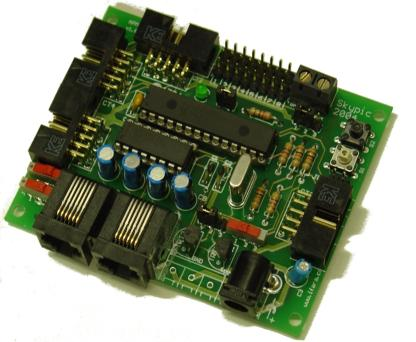
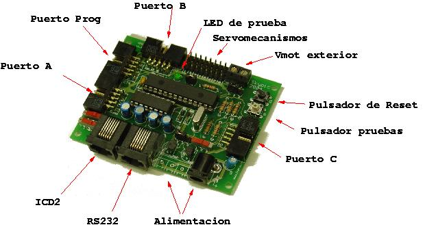
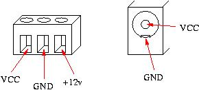
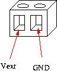
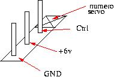
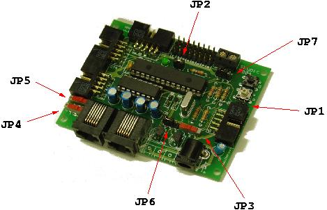
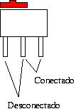
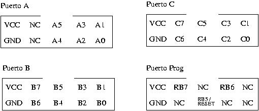

|
Tarjeta Entrenadora SKYPIC para microcontroladores PIC v1.0 |
|
 |
|
La SKYPIC es una tarjeta entrenadora para las familias de PICs 16f87x y 18fxxx de 28 pines. El objetivo ha sido desarrollar una tarjeta f�cil de usar, compatible con otras tarjetas anteriormente desarrolladas, como por ejemplo la CT6811 o la CT293, y que se pueda utilizar con las herramientas est�ndar de Microchip y con otras desarrolladas a medida para Linux.
Soporta los micros de 28 pines de las familias 16F8X y 18FXXX.
Conector tel�fonico para grabaci�n desde el ICD2 de Microchip.
Conector tel�fonico para conexi�n a puerto serie RS232.
LED de pruebas en circuito.
Pulsador de pruebas en circuito.
Bot�n de Reset.
Conector acodado para programaci�n directa desde CT6811.
Puertos A, B y C disponibles en el exterior.
Conexi�n directa de hasta 8 servomecanimos tipo Futaba, Hitec, ...
Licencia Hardware Abierto.
Compatible con Linux y Windows.
Andrés Prieto-Moreno Torres :Esquema, PCB y pruebas
Juan González Gómez :Esquema, software grabación y pruebas
Ifara Tecnolog�as :Financiaci�n primera tirada PCBs
La tarjeta Skypic es HARDWARE LIBRE y tiene una licencia GPL (o lo mas parecido pero en versi�n Hardware). Esto quiere decir que se distribuye junto con TODOS sus esquemas (esquem�ticos, rutado y ficheros de fabricaci�n). Cualquiera tiene derecho a fabricarla, copiarla, modificarla, distribuirla o venderla siempre y cuando vaya acompa�ada de TODOS los esquemas.

| Alimentación | Puertos A,B,C y Prog | Vmot | Servos |
 |
 |
 |
 |

| Jumper triple |
 |

|
|
|
|
Descarga de ficheros |
| skypic.zip | Planos en formato GERBER Extendido |
| skypic.sch | Esquematico de la placa en formato EAGLE |
| skypic.pdf | Esquematico de la placa en PDF |
| skypic.brd | PCB de la placa en formato EAGLE |
| skypic-layer.pdf | Serigrafias de la placa en PDF |
| lista-skypic | Lista de componentes de la SKYPIC |
Servidor PICP: Servidor PICP, para grabación de PICs
Cuaderno técnico 4: Grabación de microcontroladores PIC
Tarjeta PICMIN: Tarjeta mínima para trabajar con los PIC
27/Mayo/2005: Actualizada la lista de componentes. Cambio de valor en R3, ha pasado de valer 1K a valer 10K
23/Agosto/2004: Publicado el manual de configuraci�n del ICPROG para grabar la SKYPIC directamente desde el puerto paralelo.
18/Junio/2004: Publicada la versión 1.0 de la Skypic
A Juan González Gómez por las pruebas realizadas y por todo el software desarrollado para poder grabar la tarjeta desde Linux
A todo el equipo de Ifara Tecnologías, por financiar la primera tirada de la Skypic
{kind=link}
{kind=link}